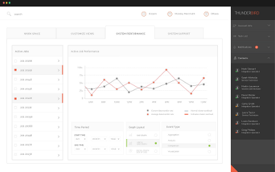

MobileView reports on system
performance.
The
System Performance Tab provides a data view of your project's progress towards its targets. Using the
Data View widget in the top right hand corner, you can manipulate the data stream:
- Change the time period displayed using the (insert time period icon) icon.
- Select different tasks to see how specific aspects of your project are progressing using the (insert task icon) icon.
You can use the real-time System Performance readings to better manage your project and subordinate tasks.
Figure: MobileView
Performance Monitor

Monitoring
System Performance
The
System Performance tab provides the ability to monitor the
performance of selected cluster hosts and specific processing jobs. In order to facilitate this,
the
System Performance tab provides simple mechanisms for selecting
active jobs (tasks), setting the
time period
within which analysis and reporting will occur, and the type of
graphical
layout and
event type will be applied.